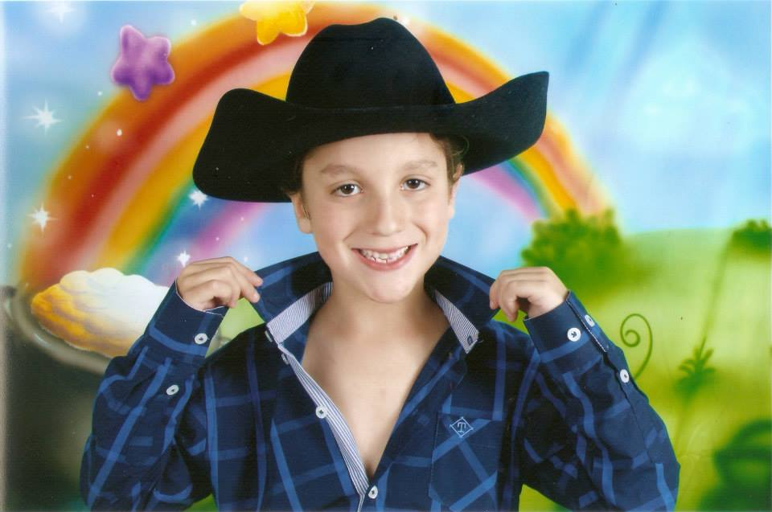
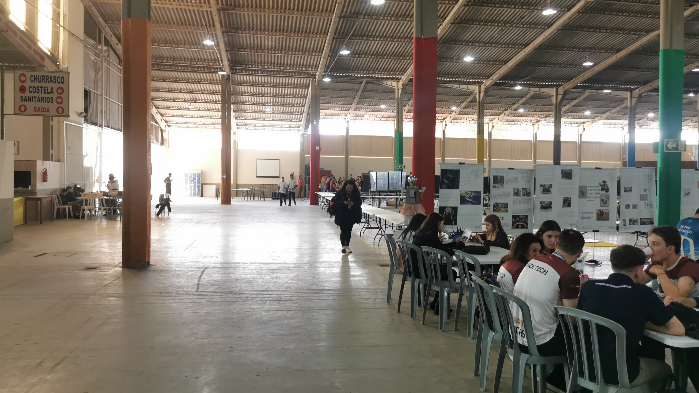

Meu Primeiro Amor-29/12/2013
Aonde tudo começou...

Último dia-16/05/2014
O último e o pior dia da minha vida, quando comecei a entender como o mundo realmente funciona...

Explorando atividades no colégio-25/07/2024
O dia que compreendi um pouco mais afundo sobre o colégio...